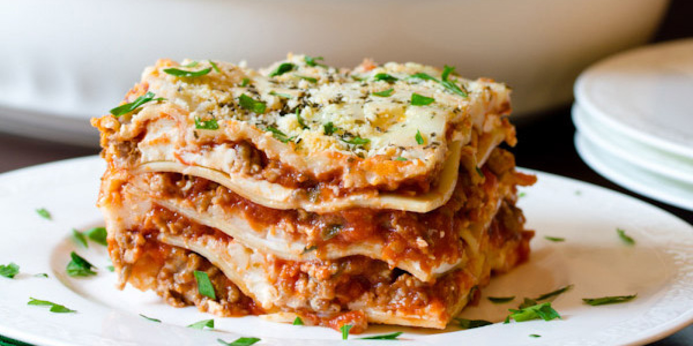

Lasagna

Description
A traditional lasagna, with about half the time and effort! I always cook extra to have leftovers, but the more I cook, the more they eat! Serve with garlic toast and salad.
Ingredients
- 1 pound ground beef
- 1 pound bulk Italina sausage
- 1/2 cup warm water
- 1 pinch basil
- 2 teaspoons garlic powder
- 1 tablespoon dried oregano
- 1 1/2 teaspoons dried sage
- 2 teaspoons ground black pepper
- 2 tablespoons minced garlic
- 1 tablespoon dried onion flakes
- 2 (14 ounce) jars marinara sauce
- 1 (16 ounce) package lasagna noodles
- 8 ounces ricotta cheese
- 1 pound mozzarella cheese, shredded
Steps
- Place the roast into a slow cooker, and season with Italian dressing mix.
- Pour in the water.
- Cover, and cook on High for 6 to 7 hours.
- During the last hour, shred the meat with two forks - if it does not shred easily, cook longer.
- Add the peppers, and as much of the juice as you like for additional flavor.
- Serve on buns.